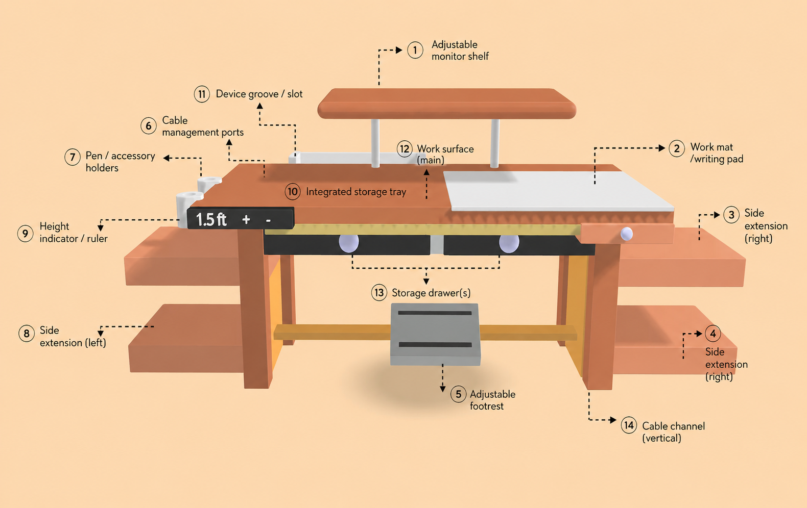
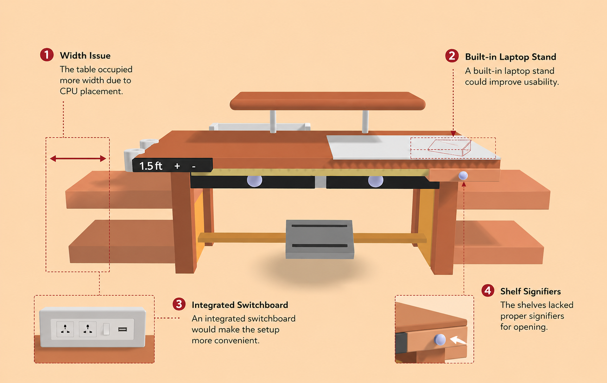

Empathize: Understanding Before Designing
Before I could design a better workspace, I needed to understand how people were actually working, not how we assume they work.
Stage 1: Learning From What Already Exists (Secondary Research)
I didn't jump straight into interviews. Instead, I stepped back.
“Because solving a problem without understanding its landscape is just guessing.”
So I started by analyzing existing data around:
Remote Work Behaviors
Spending Patterns
Workspace Setups
Ergonomic & Health Standards
What the Data Revealed
Investing in Home Office

Where Remote Workers Work

Types of Chairs Used

Posture While Working


The data gave me patterns. But patterns don't tell you pain. For that, I needed real conversations.
Stage 2: Hearing Real Experiences (Primary Research)
To move beyond assumptions, I conducted unstructured interviews.
Not rigid surveys. Not checkbox answers.
But real conversations.
How I Approached It
- Conducted via Zoom calls (remote context)
- Used open-ended questions to encourage storytelling
- Allowed conversations to flow naturally
- Asked follow-up questions based on context
- Recorded sessions to capture nuances
Who I Spoke To
04
Team Members
Each with different roles, setups, and daily workflows ensuring a diverse perspective on home office friction.
The Conversations Were Designed Around Two Layers
Layer 01
Understanding the Person
Workspace is not just physical,it's personal
- Profession & Location (Role, industry, city, work setup)
- Lifestyle & Habits (Daily routine, habits, energy patterns)
- Preferred Environments (Lighting, noise, comfort, spatial preference)
- Daily Rituals & Breaks (Break frequency, rituals, recharge activities)
- Relationship with Workspace (Emotional connection, ownership, satisfaction level)
Layer 02
Understanding the Workspace Reality
Going deeper into the daily work experience
- Setup Journey (Initial setup, urgency-driven workspace decisions)
- Daily Behavior (Work habits, routines, task switching)
- Physical Space (Desk setup, ergonomics, available space)
- Meeting Experience (Call fatigue, interruptions, meeting quality)
- Cognitive Flow (Focus levels, distractions, mental workload)
“What surprised me wasn't just the problems… it was how people had quietly adapted to them.”
What This Research Really Uncovered
People weren't working in naturally designed environments
They were adjusting themselves to broken setups
Small inefficiencies were stacking into daily frustration
Users had normalized discomfort
This is where the problem became clear , Not how to design a workspace but how to design for the reality people are already living in
Define: Understanding What Was Actually Broken
By this stage, the research had already revealed something important: People weren’t struggling because they lacked motivation to improve their workspace. They were struggling because most homes were never designed for work in the first place.
The issue wasn’t a single chair. Or a single table. Or even a single room. It was the accumulation of small compromises repeated every day. To better understand these patterns, I translated the interview findings into personas — not to represent “ideal users,” but to represent the different realities people were adapting to.
The People Behind The Research
Jinal
Visual Designer • Mumbai- Frequently shifts workspace depending on room availability
- Needs silence and privacy for focused work
- Uses plastic chair for long work sessions
- Experiences distractions and back pain regularly
“I keep adjusting my setup depending on the space available that day.”
Khushal
UX Designer • Jaipur- Started remote work from bed during lockdown
- Finds home less motivating than office environments
- Deals with sunlight glare and eye strain
- Uses temporary furniture arrangements for work
“The office environment helped me focus. At home, I constantly feel distracted.”
Neha
Accountant • Mumbai- Converted TV table into workspace
- Shares workspace with others at home
- Constantly adjusts desk items to make space
- Experiences discomfort due to poor table and chair setup
“I made the best use of what was already available at home.”
Nidhi
Former Salesforce Dev • UP- Works in shared room environment
- Uses artificial lighting for long hours
- Faces dry eyes and wrist pain
- Tries organizing space despite limited setup flexibility
“I try to organize everything properly, but the space itself limits me.”
What The Personas Revealed
Despite different professions, personalities, and lifestyles, the frustrations were surprisingly similar. People were:
Repurposing furniture instead of using ergonomic setups
Sharing spaces not designed for focused work
Continuously adjusting around environmental limitations
Normalizing discomfort as part of work life
The challenge was no longer:
"How do we improve a workspace?"
It
became:
"How do we design for the reality people are already living
in?"
Deep Dive: The 5 Whys Framework
To move beyond surface-level symptoms and identify the deeper causes behind these frustrations, I used the 5 Whys Framework.
01
Workspaces Were Built Around Availability — Not Work
Users Affected: Jinal • Neha • Nidhi
Evidence
- Work frequently shifted between rooms
- Shared spaces created interruptions
- Existing household furniture became workstations
- Dedicated workspace ownership was rare
Problem
Users constantly adjusted their setup throughout the day instead of working from a stable environment.
5 Whys
- Why? Users didn’t have dedicated workspaces.
- Why? Home environments were shared across multiple activities and people.
- Why? Homes were designed for living — not for long-duration professional work.
- Why? Remote work adoption happened faster than home environments could adapt.
- Why? Most workspace solutions assume users already have ideal spatial conditions.
Root Cause: Workspace systems are designed for
fixed environments, while real home environments are flexible,
shared, and constantly changing.
Design Opportunity: Design portable and
space-efficient systems that adapt naturally to changing home
conditions.
02
Comfort Was Prioritized Over Ergonomics
Users Affected: Jinal • Neha • Nidhi
Evidence
- Plastic and lounge chairs dominated usage
- Semi-reclined working posture was common
- Back pain and wrist strain appeared repeatedly
- Ergonomic furniture usage was limited
Problem
Users experienced physical discomfort during long work sessions.
5 Whys
- Why? Users worked in compromised sitting positions.
- Why? Their furniture lacked ergonomic support.
- Why? Users relied on available household furniture instead of work-focused setups.
- Why? Ergonomic furniture was perceived as expensive and space-consuming.
- Why? Most ergonomic solutions were not designed for realistic home environments.
Root Cause: Current ergonomic products fail to fit
the affordability, flexibility, and spatial realities of modern
homes.
Design Opportunity: Create ergonomic solutions that
integrate naturally into everyday home furniture and routines.
03
Environmental Friction Reduced Focus
Users Affected: Khushal • Nidhi • Jinal
Evidence
- Sunlight glare affected visibility
- Shared rooms created interruptions
- Artificial lighting caused eye strain
- Noise impacted concentration and meetings
Problem
Users struggled to maintain consistent focus while working from home.
5 Whys
- Why? Work environments contained constant distractions.
- Why? Workspace conditions changed throughout the day.
- Why? Work happened inside multi-purpose living environments.
- Why? Homes lacked environmental control for professional work.
- Why? Remote work systems optimized digital workflows — not physical environments.
Root Cause: Remote work experiences focus heavily
on productivity tools while ignoring environmental realities.
Design Opportunity: Design systems that improve
privacy, lighting adaptability, focus, and environmental comfort.
04
Workflows Became Reactive Instead Of Intentional
Users Affected: Neha • Jinal • Khushal
Evidence
- Setups required repeated adjustment
- Furniture served multiple unrelated purposes
- Workspace layouts changed throughout the day
- Workflows adapted around physical limitations
Problem
Users lost efficiency because their setup constantly required reconfiguration.
5 Whys
- Why? Workspace layouts were not optimized for daily workflows.
- Why? Available furniture was repurposed instead of designed for work.
- Why? Users prioritized “making it work” over long-term usability.
- Why? Workspace systems were not designed for adaptive living conditions.
- Why? There was no accessible framework for creating intentional home workspaces.
Root Cause: Home workspaces are built reactively
through temporary adjustments instead of intentional workflow
systems.
Design Opportunity: Design modular systems that
support multiple work modes without constant reconfiguration.
05
Discomfort Quietly Became Normal
Users Affected: All Personas
Evidence
- Back pain became routine
- Eye strain was normalized
- Users continued working despite discomfort
- Temporary setups slowly became permanent
Problem
Users adapted to unhealthy workspace behaviors instead of addressing them.
5 Whys
- Why? Discomfort developed gradually over time.
- Why? Users adapted instead of questioning their setup.
- Why? Productivity became more important than well-being.
- Why? Remote work blurred the boundary between comfort and functionality.
- Why? Users lacked awareness of what a healthy workspace should actually feel like.
Root Cause: Long-term adaptation normalized
unhealthy workspace behavior.
Design Opportunity: Design systems that make
healthier workspace behavior visible, achievable, and sustainable.
Ideation: Exploring Possibilities Before Solutions
“Research helped uncover the problems. Ideation helped explore how those problems could be solved.”
Instead of jumping directly into one solution, I used the Crazy 8 ideation technique to rapidly explore multiple possibilities across stability, comfort, focus, and workspace behavior.
The goal wasn’t to find the perfect idea immediately. It was to think broadly, challenge assumptions, and generate different directions before narrowing down the final concept.
Crazy 8 Ideation — Home Workspace Desk Solution
01
Users constantly adjusted their setup throughout the day instead of working from a stable environment.
Crazy 8 Ideas
Fold-Out Modular Desk
Desk expands or collapses based on task needs.
Sliding Work Zones
Dedicated sliding sections for laptop, writing, food, accessories.
Height Preset System
One-touch switch between sitting, standing, and relaxed modes.
Cable Management Channel
Built-in cable routing to avoid daily setup clutter.
Dock & Lock Workspace
Every accessory has a fixed magnetic docking position.
Portable Compact Desk Mode
Desk can shift between rooms without full rearrangement.
Adaptive Lighting Integration
Desk lighting changes based on work activity or time.
Smart Storage Compartments
Hidden storage reduces constant clearing and reorganization.
02
Users experienced physical discomfort during long work sessions.
Crazy 8 Ideas
Ergonomic Curved Edge Desk
Reduces wrist pressure during typing.
Adjustable Arm Support Panels
Foldable elbow/wrist resting surfaces.
Integrated Footrest System
Supports posture and leg comfort.
Sit-Stand Hybrid Desk
Encourages posture variation throughout the day.
Monitor Elevation Platform
Adjustable screen height to reduce neck strain.
Breathable Surface Material
Heat-resistant and sweat-friendly arm contact areas.
Posture Guidance Indicators
Visual markers for ideal sitting alignment.
Stretch Reminder Integration
Subtle lighting or vibration reminders for movement breaks.
03
Users struggled to maintain consistent focus while working from home.
Crazy 8 Ideas
Focus Mode Desk Lighting
Minimal distraction lighting during deep work sessions.
Noise-Reducing Side Panels
Foldable acoustic partitions for concentration.
Single-Task Workspace Zones
Desk sections designed for one activity at a time.
Minimal Visual Layout
Hidden compartments reduce visible clutter.
Pomodoro Timer Integration
Built-in timer for structured focus sessions.
Phone Isolation Dock
Dedicated distraction-free charging slot.
Ambient Productivity Setup
Integrated soft lighting + calming desk textures.
Routine Trigger Design
Desk automatically transforms into “work mode” setup.
04
Users adapted to unhealthy workspace behaviours instead of addressing them.
Crazy 8 Ideas
Posture-Aware Desk Design
Desk dimensions naturally encourage healthy posture.
Anti-Slouch Screen Placement
Forces ergonomic viewing angles.
Movement Encouragement Features
Standing prompts or movable work positions.
Healthy Habit Reminder Strip
Visual reminders for hydration, breaks, posture.
Eye-Level Workspace Alignment
Built-in monitor/laptop riser system.
No-Bed Working Design Philosophy
Desk designed to create separation between rest and work.
Behavior-Correcting Layout
Prevents awkward seating and cramped leg placement.
Workspace Ritual Features
Start/end-of-day setup actions to reinforce healthier routines.
05
Users lost efficiency because their setup constantly required reconfiguration.
Crazy 8 Ideas
One-Touch Workspace Presets
Desk instantly shifts between work modes like meetings, focus work, or casual tasks.
Magnetic Accessory System
Mouse, charger, stationery, and devices snap into fixed positions.
Task-Based Desk Zones
Dedicated areas for laptop work, note-taking, meetings, and storage.
Collapsible Work Extension Panels
Expandable surfaces appear only when needed.
Smart Cable Routing Tracks
Prevents cables from needing repeated adjustments.
Portable Docking Station
Single hub connects all devices instantly during setup changes.
Auto-Organizing Storage Compartments
Quick-access sections reduce time spent rearranging items.
Workspace Memory Layout
Desk markings or adjustable guides help users restore preferred setups quickly.
Problem Prioritization
P1
Users lost efficiency because their setup constantly required reconfiguration.
Repeated setup changes interrupted workflow, reduced productivity, and increased mental effort.
P2
Users constantly adjusted their setup throughout the day instead of working from a stable environment.
Users lacked a consistent workspace, leading to unstable work routines.
P3
Users experienced physical discomfort during long work sessions.
Poor posture and non-ergonomic setups caused strain and fatigue.
P4
Users struggled to maintain consistent focus while working from home.
Distractions and clutter reduced concentration and deep work ability.
P5
Users adapted to unhealthy workspace behaviours instead of addressing them.
Users normalized poor work habits instead of improving their environment.
Selected Problem Direction
After evaluating all identified challenges, the project moved forward with:
Priority 01
“Users lost efficiency because their setup constantly required reconfiguration.”
This problem was selected because it acted as the root cause behind several other workspace issues — including instability, discomfort, distraction, and unhealthy work habits.
By improving workspace organization and reducing setup friction, the solution had the potential to create a more stable, efficient, and sustainable work experience.
Prototype: Translating Ideas Into a Physical Model
“The prototype phase focused on converting research insights and selected concepts into a tangible workspace model.”
My goal was to design a setup that reduced workspace reconfiguration, improved organization, and created a more stable working experience.

Smart Solutions for an Efficient Home Office Setup
Integrated Writing Surface
Quick note-taking during meetings and work sessions.
Adjustable Height Mechanism
Supports ergonomic posture for different users.
Flexible Footrest
Improves accessibility and sitting comfort.
Built-in Side Holders
Keeps essentials like bottles and stationery within reach.
Movable Extension Platform
Allows customizable workspace arrangement.
Elevated Monitor Stand
Reduces eye and neck strain through better screen positioning.
Multi-Utility Front Slider
Functions as writing support and additional storage space.
Integrated Storage Shelves
Helps organize items and reduce workspace clutter.
Testing — Validating the Direction
“To understand whether the proposed solution addressed the identified problems, the prototype was reviewed with the same participant group involved during the research phase.”
Participants were given a walkthrough of the workspace model and encouraged to observe, question, and share feedback. This helped validate whether the proposed ideas effectively addressed the pain points identified during the interviews.
Key Feedback Received

01
Width Issue
The table occupied more width due to CPU placement.
02
Built-in Laptop Stand
A built-in laptop stand could improve usability.
03
Integrated Switchboard
An integrated switchboard would make the setup more convenient.
04
Shelf Signifiers
The shelves lacked proper signifiers for opening.
Iteration Focus
Due to time constraints, not all feedback could be implemented. The iteration phase primarily focused on:
Focus 01
Optimizing table width and space usage
Redesigning the configuration and placement of side panels to reduce spatial footprint while retaining workspace comfort.
Focus 02
Improving shelf usability through clearer signifiers
Introducing highly visible opening cues and tactile shapes to enhance the intuitive operation of modular storage shelves.
Feedback-Driven Iterations : Before & After
In the iteration phase, I have made the storage area/compartments to be flexible so that depending on the space that users have at their home they can move it inside or keep it outside the table.
Before
Original Concept Model
Static storage and rigid layout that occupied significant floor and desk width, leading to spatial constraints in standard home environments.
After

Iterated Flexible Model
Fully modular, flexible side compartments. The storage unit can now slide seamlessly inside the desk footprint or expand outward based on the user's available room size.